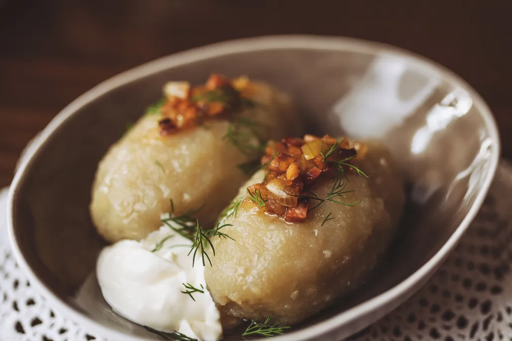

Zeppelins

Description
Lithuanian cepelinai or zeppelin dumplings are hearty, football-shaped dumplings made with grated raw potatoes and riced boiled potatoes.
Cepelinai used to be the perfect hearty meal delivering the necessary energy that our predecessors needed to endure the cold climate while working the fields. The times have changed, so has Lithuanian cuisine: over the last few decades, the local chefs have introduced foreign flavours to cepelinai and have transformed it to a healthy everyday dinner or lunch option.” Fillings now range from buckwheat to cottage cheese and mint, carrot and hemp seed.
Ingredients
Main
- 400g waxy potatoes;
- a beaten egg;
- one diced shallot;
- 250g minced pork;
- ½tsp ground caraway;
- one crushed garlic clove;
- 1 tbsp plain flour plus extra for dusting
Sauce
- 2 tbsp dried porcini;
- 1 tsp butter;
- two diced shallots;
- 200g sliced mushrooms;
- 200g crème fraîche.
To serve
- two rashers smoked streaky bacon;
- chopped dill
Steps
- Divide the potatoes into two batches. Chop one batch into chunks and boil for 15-20 minutes until tender, then drain and mash. Finely grate the remaining spuds and tip into a bowl lined with a tea towel. Squeeze tightly to expel any liquid; keep 2tbsp of this juice and discard the rest.
- In another large mixing bowl, add the reserved potato juice, the grated potato, mashed potato and half the beaten egg. Beat everything together, seasonand leave to cool, then chill while you prepare the filling.
- Mix together the shallot, minced pork, caraway seeds, garlic, remaining egg with salt and pepper. Now blend 1tbsp of flour into your potato mixture and divide into 8. Flour a work surface and lightly shape the potato dough into flat round patties, approximately 1cm thick. Put 1 heaped tsp of the pork filling in the middle of each one, then gently encase the pork and form a dumpling. Roll them in your hands to achieve the signature zeppelin shape. Repeat with the rest of the patties and filling.
- Bring a large pan of water to a rolling boil, then reduce to a simmer. Gently lower in the dumplings, cover and cook gently for 30 minutes. The water must not boil or they might start to disintegrate.
- Meanwhile, fry the bacon until crisp, then chop into small dice and set aside.
- To make the sauce, pour 100ml of boiling water over the dried porcini and leave to stand for five minutes. In a saucepan, heat the butter and add the shallots, frying gently until they are soft and translucent. Add the mushrooms and cook for a few minutes more. When they are cooked, pour in 1tbsp of the liquor from the porcini and discard the rest. Chop the porcini and add them. Fold in the crème fraîche, bring to a simmer, then season.
- To serve, place two dumplings on each plate and pour over the mushroom sauce. Sprinkle the dill and bacon pieces over just before serving.